02.01.04
Assetliste og designdokumentation
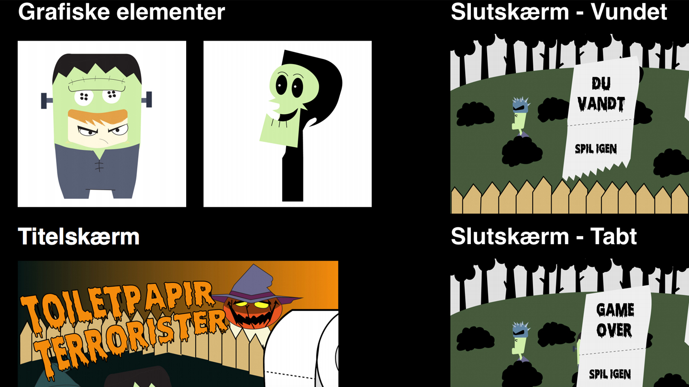
Link til Opgave
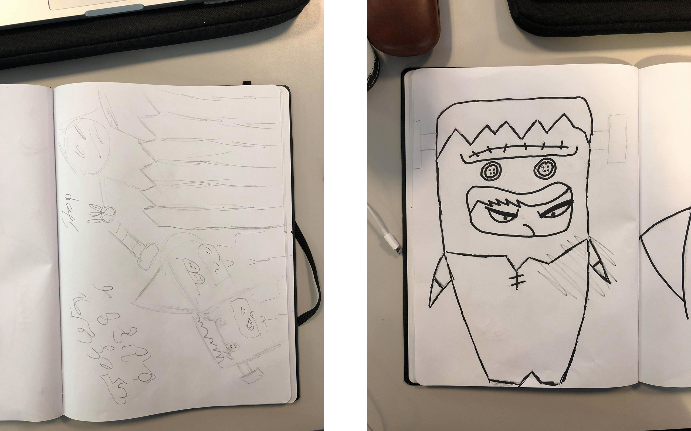

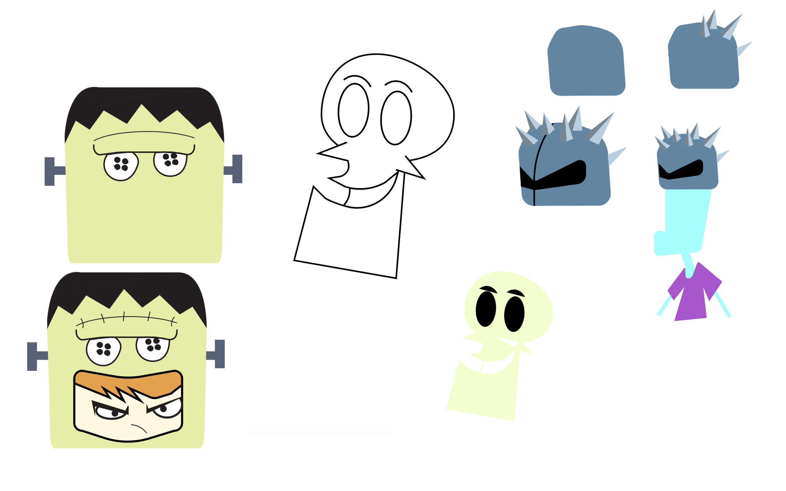
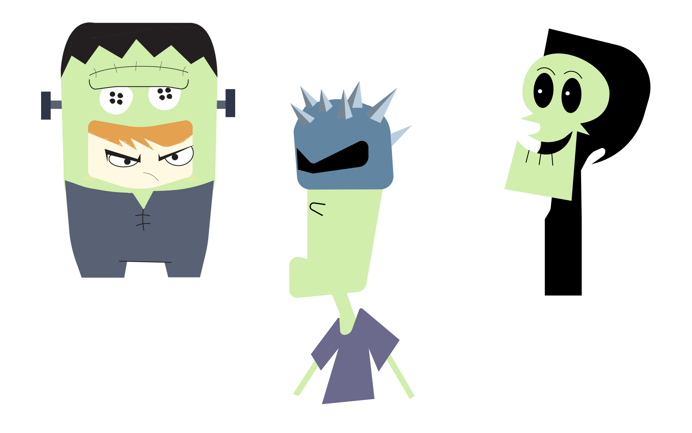
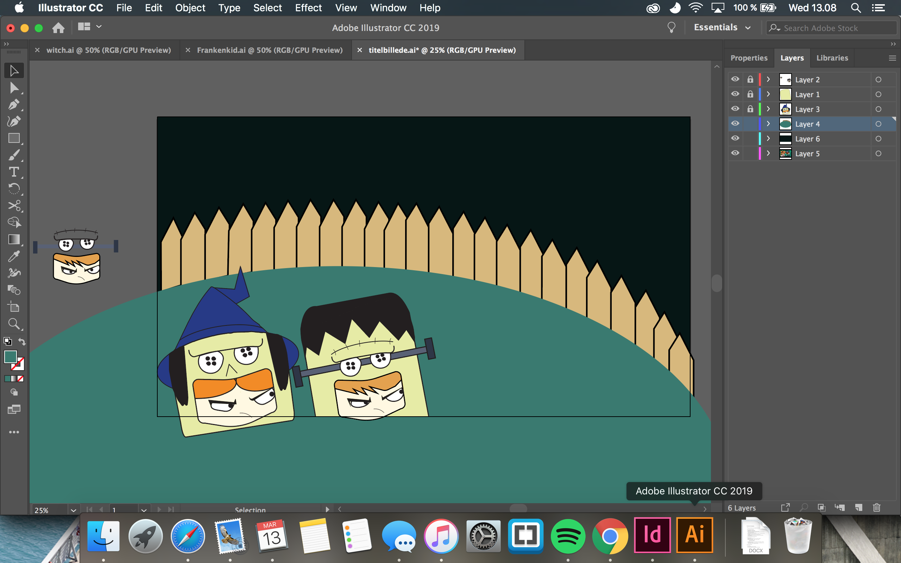
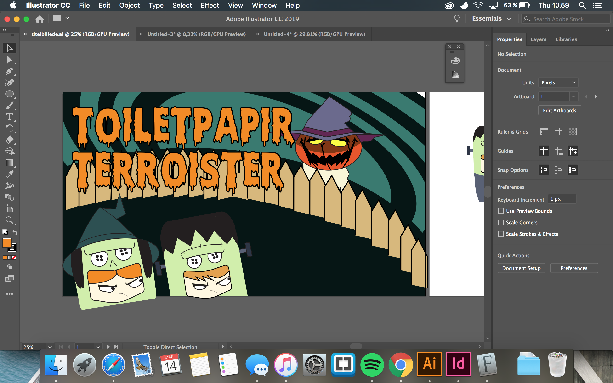
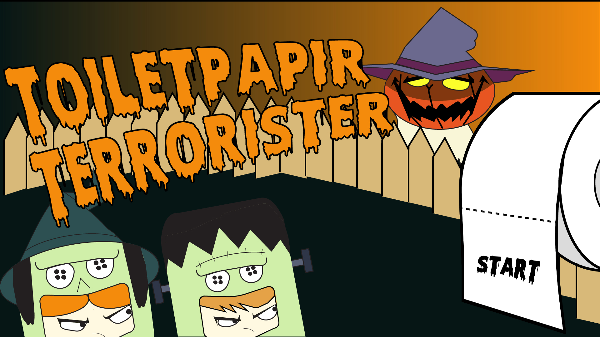

02.01.04 var udarbejdelsen af eget spil via Java Script og CSS animationer. Projektet omhandlede at genere og tegne et spil ved hjælp af skitseringsteknikker, idegenereringsteknikker, moodboards og styletiles. Alle grafiske spil elementer er tegnet i Adobe Illustrator og gemt som svg. Filer.
Figurene er tegnet simpelt og er kun illustreret med de mest essentielle træk. Farverne gør brug af stærke kontraster da der ikke bruges outlines.
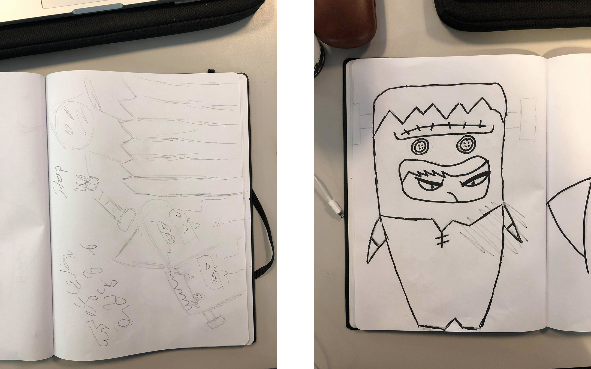
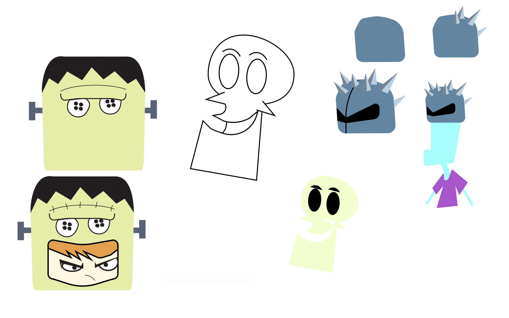
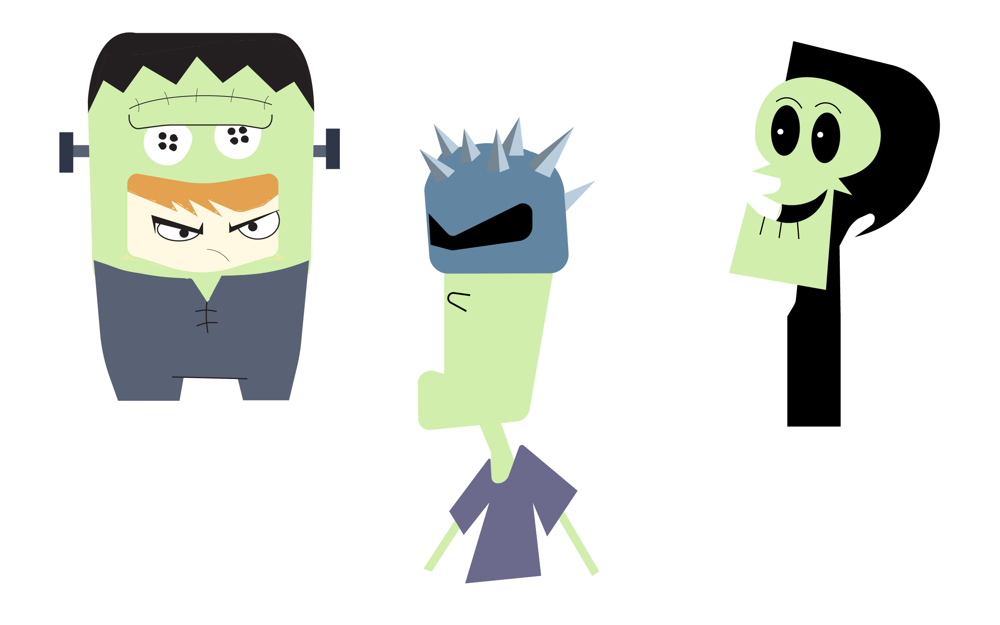
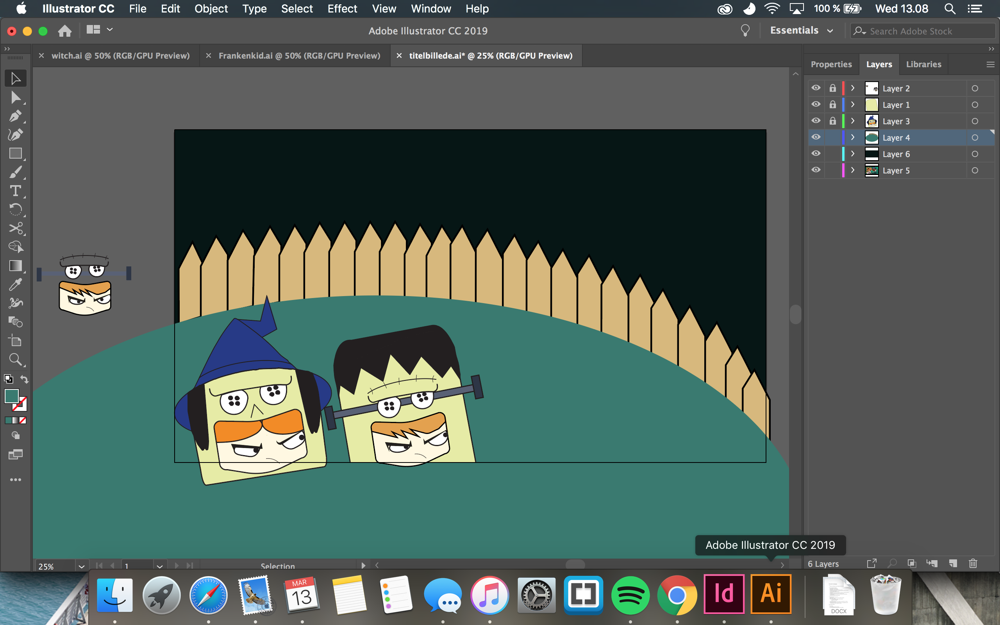
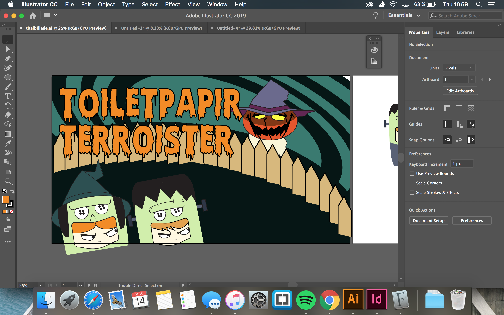
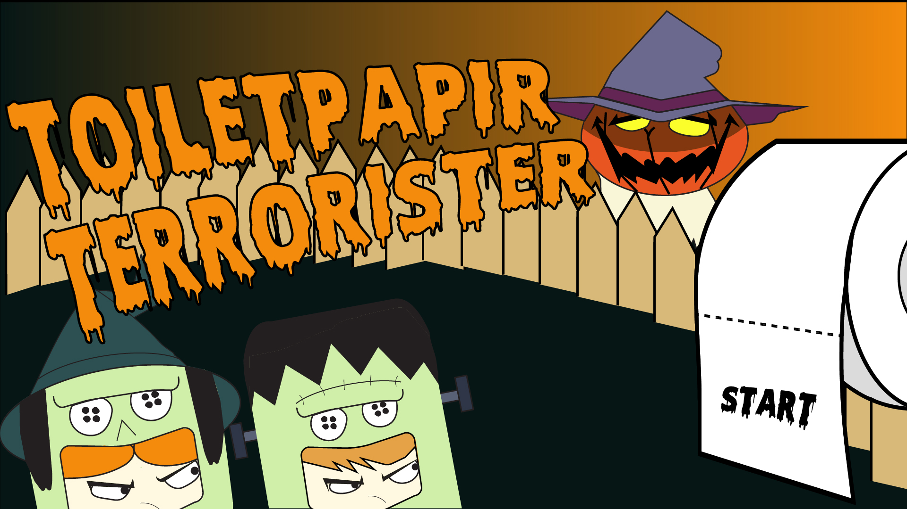